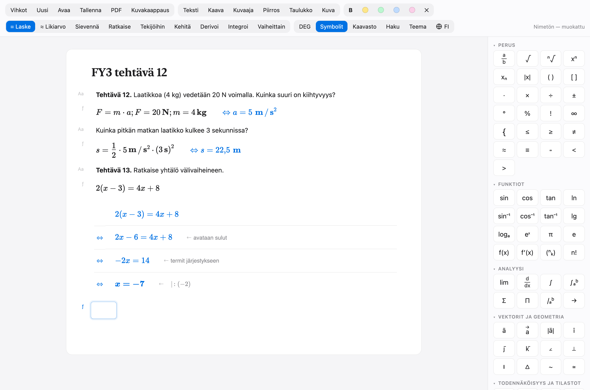
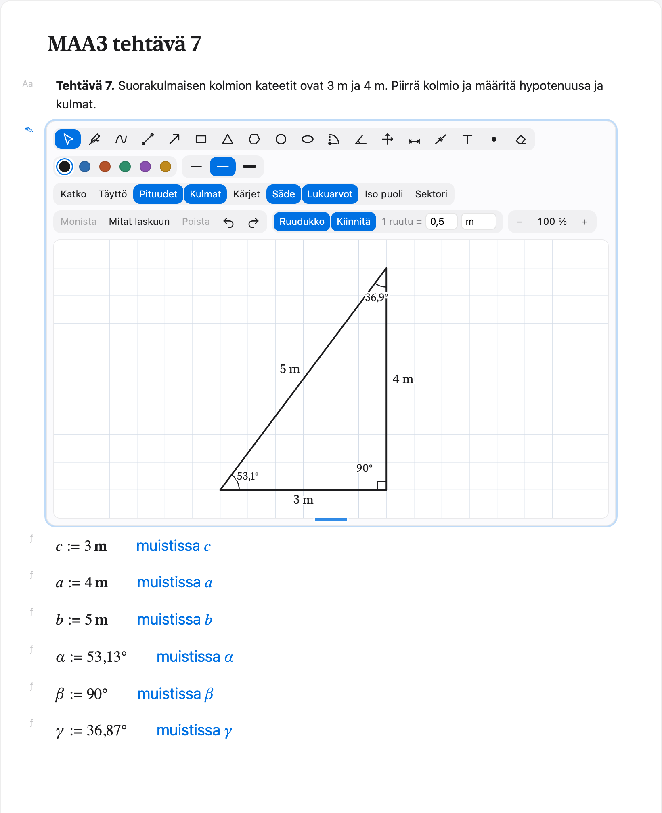

Tältä se näyttää.
Tehtävänanto, lasku ja välivaiheet samalla sivulla. Sininen on Laskuvihkon laskema.

Näe, miten vastaus syntyy.
Laskuvihko ei anna pelkkää vastausta. Se näyttää jokaisen välivaiheen ja kertoo, mitä siinä tehtiin, joten opit samalla.
Kuvaaja piirtyy samalle sivulle.
Liikuta kertoimia. Paraabeli muuttuu heti, ja nollakohdat lasketaan heti.
Piirrä kuvio. Mitat tulevat mukaan.
Piirrä kolmio, ympyrä tai voimakuvio suoraan vihkoon. Laskuvihko mittaa sivut ja kulmat itse, ja yhdellä napilla mitat siirtyvät laskuun.
- Kynä, janat, nuolet, kolmiot, ympyrät, kaaret ja koordinaatisto
- Pituudet ja kulmat näkyvät kuviossa valmiiksi
- Kärjet tarttuvat ruudukkoon, joten kuvasta tulee siisti

Yksiköt kulkevat mukana.
Kirjoita lasku yksiköineen tai valitse esimerkki. Laskuvihko muuntaa ja sieventää ne itse.
Koko tehtävä yhdellä sivulla.
Teksti, kaavat, kuvaajat, piirrokset ja kuvat samassa vihkossa. Kun tehtävä on valmis, palautat sen PDF:nä.
Mitä Laskuvihkolla voi laskea?
Matematiikka
Yhtälön ratkaisu välivaiheineen, toisen asteen yhtälö, yhtälöryhmät, trigonometriset yhtälöt, derivaatta, integraali, raja-arvo, vektorit, matriisit, tilastot ja funktion kuvaaja.
Fysiikka
Laskut yksiköineen: yksikkömuunnokset (km/h ja m/s, °C ja K, kJ ja J), kaavan ratkaisu halutun suureen suhteen, liike, voimat, energia, lämpö ja sähkö. Kaavasto on aina vieressä.
Kenelle
Lukiolaiselle kotitehtäviin ja kertaukseen, esimerkiksi pitkän ja lyhyen matematiikan (MAA, MAB) ja fysiikan (FY) kursseille. Ei ole käytössä ylioppilaskokeessa.